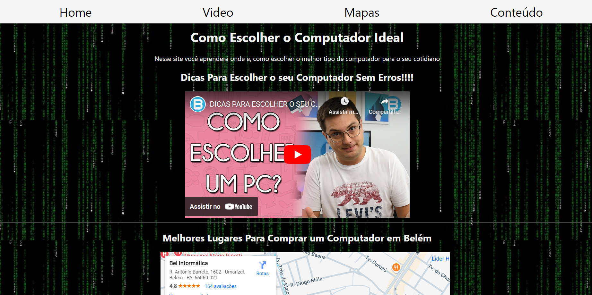
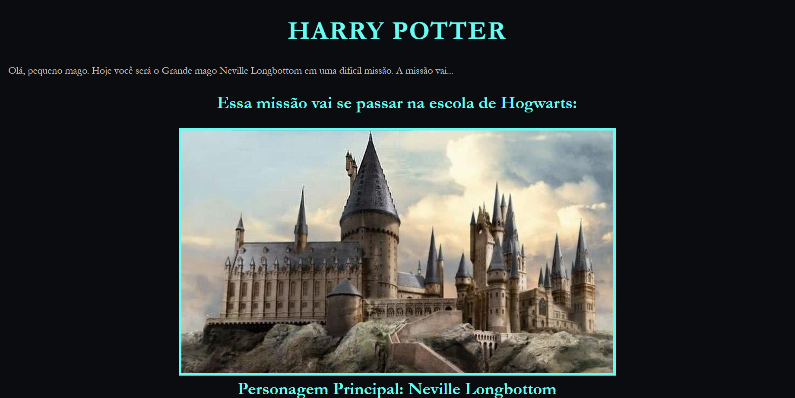

Sobre Mim
Oiüëã Meu nome √© Murilo. Eu sou um estudante de 18 anos que mora em Ananindeua, Brasil. Eu sou um estudante de Ci√™ncia da Computa√ß√£o no Cesupa. Ainda novo no mundo da tecnologia, mas disposta a sempre aprender mais e mais.
Habilidades
Statisticas Github
Trabalhos
Pagina Estática
Esse trabalho foi feito em equipe com mais 2 desenvolvedores, é uma página básica que fala sobre os 5 melhores restaurantes da cidade de belém e seus principais pratos e um link para suas redes sociais. Eu fiquei encarregado
LandPage
Esse trabalho foi inteiramente feito por mim, é basicamente uma página que tem um vídeo explicando sobre as diferenças entre os tipos de pc's, tem também localizações de lugares para comprar pc, logo depois tem uma tabela dando uma breve explicação sobre os tipos de pc's.
RPG Interativo
Esse site é um rpg onde o usuário pode escolher o rumo da história dependendo de sua ação, foi baseado no universo de Harry Potter. Conta com vários caminhos da história, mas acaba apenas em vitória ou derrota. Eu fiquei encarregado do html